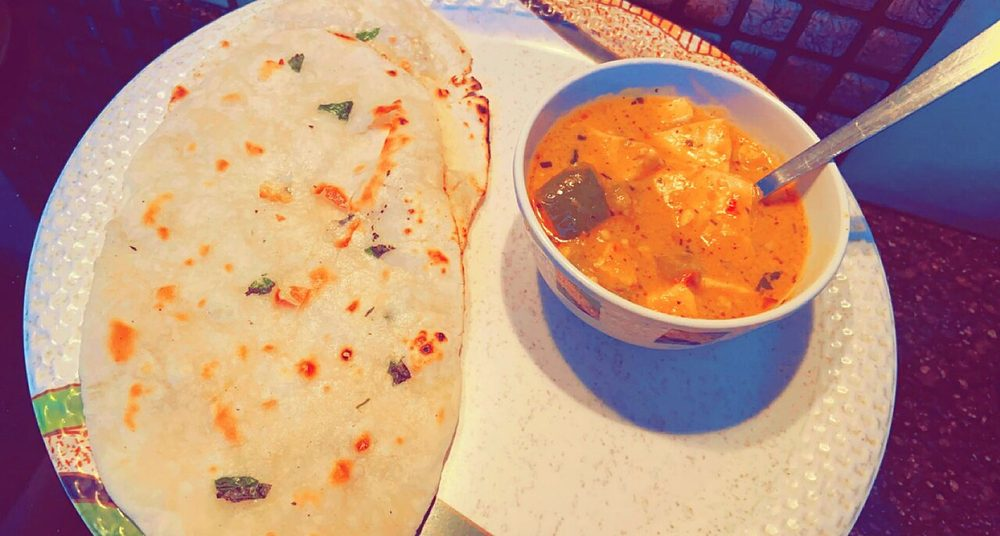

Contains: milk
Checked against the ingredient list for ten allergens: milk, egg, fish, crustaceans, tree nuts, peanuts, sesame, mustard, soy and gluten. Brands vary, so read the label on anything new to you.
Ingredients
Quantities for 4.
- 350g, cut into thick fingers Paneer
- 2, cut into 3cm squares Capsicum
- 2, cut into petals Onion
- 400g, chopped Tomato
- 2 tbsp, coarsely pounded Coriander Powdercoarse, not fine: kadai masala has texture
- 4, pounded with the coriander Dried Red Chilli
- 1 tbsp, julienned Ginger
- 1 tbsp, chopped Garlic
- 1 tbsp, crushed Kasuri Methi
- 1/2 tsp Garam Masalaoptional
- 2 tbsp Creamoptional
- 3 tbsp Neutral Oil
- a handful Coriander Leavesoptional
- to taste Salt
Cookware
stovetop, kadhai
Before you start
- Kadai masala is pounded, not powdered. Whole coriander seed and dried chilli crushed together in a mortar is the whole character of the dish.
- Everything stays in large pieces. This is not a smooth gravy.
Method
- Dry-roast the coriander seed and dried chillies until they smell nutty, cool, then pound coarsely.Coarse means you can still see the pieces.
- Fry the onion petals and capsicum in hot oil for 3 minutes on high, so they take colour but stay crisp. Lift out and reserve.
- In the same pan cook the garlic and half the ginger, add the tomato and half the pounded masala, and cook 10 minutes until the oil separates.
- Return the vegetables, add the paneer and the rest of the masala, and toss 3 minutes over high heat.Toss rather than stir. The pieces should stay whole.
- Finish with crushed kasuri methi, garam masala, the remaining ginger julienne and the cream if using.
- Scatter coriander and serve straight from the kadai with roti.
Storage
Best fresh: the peppers soften and lose their point overnight. Keeps 2 days refrigerated.
Nutrition Medium estimate
Medium protein: 19+ g a serving, 17% of the calories
| Per serving333 g | Per 100 g | |
|---|---|---|
| Calories | 455+ kcal | 137+ kcal |
| Protein | 19.3+ g | 6+ g |
| Carbohydrate | 19.7+ g | 6+ g |
| of which sugars | 8.7+ g | 3+ g |
| Fibre | 5.2+ g | 2+ g |
| Fat | 34.8+ g | 10+ g |
| of which saturated | 14.2+ g | 4+ g |
| of which unsaturated | 16.3+ g | 5+ g |
The + means ingredients given to taste rather than by weight are counted as zero, so the true figure is a little higher than shown. Worked out from the listed quantities. Some of the ingredient list is given to taste rather than by weight, so treat these as a guide. Ingredients given to taste rather than by weight are counted as zero, so the real figure is a little higher than this. The + says so. Some ingredients have no exact match in the nutrient database and use the nearest equivalent: garam masala. Estimated from raw ingredients using USDA FoodData Central. Cooking changes are not modelled, and added salt is excluded, so sodium is not given.
Written and checked against sources, not cooked in a test kitchen. Times, yields, allergens and nutrition are worked out rather than measured, so use your own judgement on doneness and on storing. More in About.